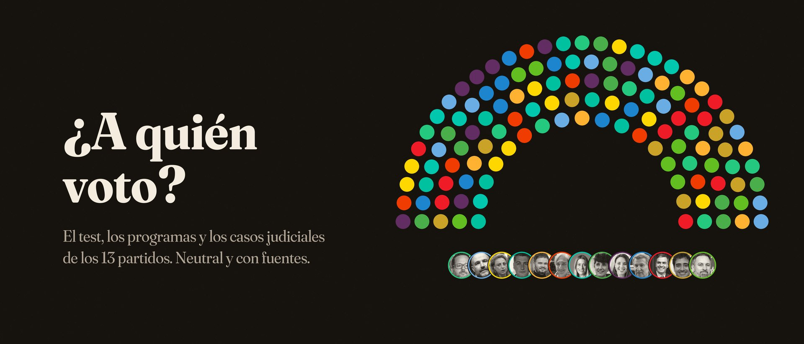
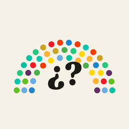

¿A quién voto?
El test, los programas y los casos judiciales de los 13 partidos que se presentan a las elecciones generales del 29 de noviembre. Neutral y con fuentes.
¿Necesitas ayuda o has visto un error?
Escríbeme a
alvaromarianorodriguezbenitez@gmail.comSi un dato es incorrecto, indica el partido y el apartado. Las correcciones y rectificaciones se revisan con prioridad.
Preguntas frecuentes
¿Cómo calcula la app mi afinidad?
Respondes a 25 afirmaciones en una escala de cinco puntos. La posición de cada partido en cada afirmación está codificada a partir de su programa electoral, sus votaciones en el Congreso o sus declaraciones oficiales, con la fuente. Para cada afirmación que habéis respondido los dos se mide la distancia entre vuestras respuestas, y la afinidad es la media. Los temas que marcas como muy importantes cuentan el doble.
¿La app me dice a quién votar?
No. Te muestra con qué partidos coincides más, en qué afirmaciones y por qué. Mide coincidencia de posiciones, no la credibilidad ni la gestión de cada partido. La decisión es tuya.
¿Cómo se garantiza la neutralidad?
Todos los partidos tienen la misma estructura de datos y el mismo diseño, aparecen en orden aleatorio y sus candidatos tienen la misma foto en el mismo formato. Las afirmaciones están redactadas en ambos sentidos para que estar de acuerdo no empuje siempre hacia el mismo lado. Los datos se revisaron desde tres perspectivas políticas distintas para detectar sesgos.
¿Qué partidos aparecen?
Los que tienen representación en el Congreso y los que superan alrededor del 1 % en la media de encuestas para estas elecciones: 13 en total.
¿Qué casos judiciales se incluyen?
Procedimientos penales por delitos de corrupción, con los mismos criterios para todos los partidos, que están publicados dentro de la app. Cada caso muestra su estado procesal real y sus fuentes. Toda persona investigada o acusada tiene derecho a la presunción de inocencia, y en los casos archivados, con absolución o prescritos no se nombra a nadie. Si crees que un dato es incorrecto, escríbeme y lo revisaré.
¿De dónde salen las fotos?
De Wikimedia Commons, con licencias libres. Los créditos de cada foto están en la app, en «Acerca de».
¿Qué hacéis con mis respuestas?
Nada: se guardan solo en tu iPhone y puedes borrarlas desde la app. No hay cuentas, anuncios, analítica ni servidores. Consulta la política de privacidad.